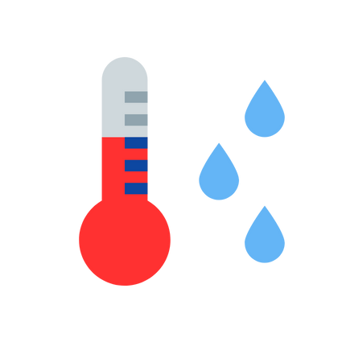

This slide will have a full-size background image.
I want to know how the data is handled.
I want to understand the user experience for products.
I want to understand the user experience of the archiving process.
I want to understand the user experience of knowledge discovery.
This is John.
John is a NOAA Fisheries Scientist.
John wants to generate a report on the effects of water temperature on Ocean Quahogs.

This will require John to do a lot of work for each new dataset. Cleaning, joining, and analyzing each.

John hears about AQUAVIEW.
AQUAVIEW provides re-producible pipelines for data ingestion, metadata creation, report generation, archiving, and information accessibility.
AQUAVIEW pipelines can be triggered by changes in data, run on a schedule, or on demand.
John runs the report and finds that water temperature has a significant effect on Ocean Quahogs, with
movement north of their normal range corresponding to cooler water temperatures.
John will wait for the next data update, knowing AQUAVIEW will update the report as soon as it comes in.
Now John can relax.